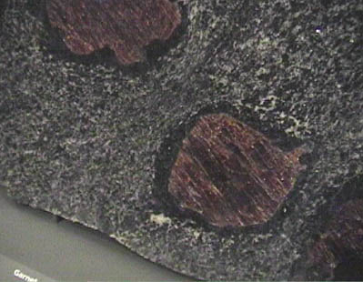

This garnet has the general composition (Mg,Fe,Mn,Ca)3 (Al,Fe,Cr)2(SiO4)3 but garnet refers to a group of minerals with TO4 groups where T = Si, As, V, Al, Fe, Te. They are found in many rock types.

This sample is described as garnet amphibolite. It has inclusions of garnet which are 10-12 cm across. The sample is on display in the Smithsonian Museum of Natural History.